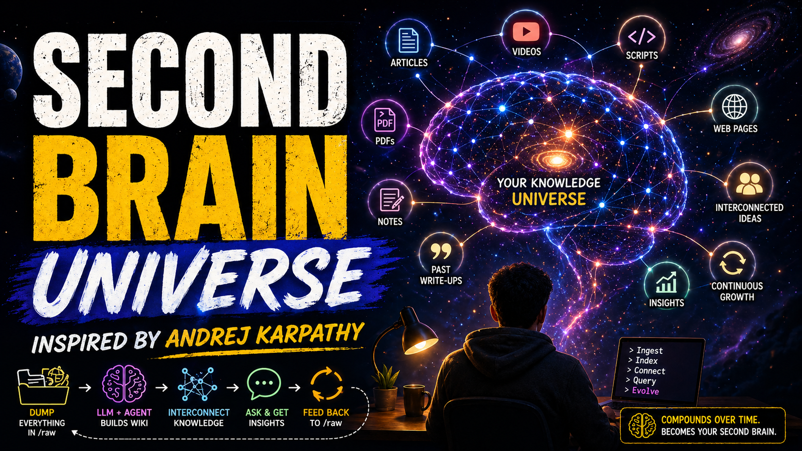

Second Brain Universe: How I Built Multiple AI Knowledge Bases Using Claude
Recently, there was a tweet by Andrej Karpathy on how one can have their own knowledge base on any topic and how it compounds over time — which he names the Second Brain.
The Idea
The concept is simple: dump all the resources of a topic into one folder called /raw. This can include anything — documents, web pages, scripts, past write-ups, or even YouTube transcripts, all in a single folder. The best part? You don't need to organise it. Just dump it in there.
The tool Karpathy suggested was Obsidian, which I believe is perfect for this. By just installing an extension in Google Chrome, dumping becomes effortless — just a matter of a few clicks.
How It Works
Then comes an LLM model and a coding agent. I used Claude Code for this. By passing simple instructions — which I copy-pasted from the tweet and tweaked with Claude's help — the agent makes a wiki out of that knowledge base. It creates summaries, marks important names and events, and makes things interconnected.
That's all — we are good to go. Open the chatbot (in my case, Claude Code), direct the agent to the folder, and start asking questions by instructing it to answer from the wiki. It gives a well-refined answer drawn from multiple sources you dumped in the folder.
The output can be generated in any format, and this output is then again fed back into /raw — acting as a new resource. And the loop continues. With time, you build your own brain trained on exactly the resources you care about.
Karpathy has also introduced health check runs that periodically delete any contradictory or irrelevant information, keeping the knowledge base lean and accurate.
Taking It One Step Further — Second Brain Universe
Instead of having a single brain, I created multiple brains for each topic — health, finance, history. I asked Claude to write simple terminal commands so I don't have to create folders each time or write instructions manually. Now, two commands from the terminal and my brain folders are created, ready for dumping.
The Second Brain Universe — multiple knowledge bases, each compounding over time.
When to Use It — and When NOT To
I realised that Claude uses a lot of tokens to read files and create the wiki, so I fixed it by adding a feature that moves indexed files to a separate folder automatically — so the next run doesn't re-read old files.
What I can't fix is the token cost of answering queries, since the agent now has to cross-reference several texts to respond. This led to an important realisation:
For example: I built a brain on the topic of history, dumped resources about the current Iran–US conflict and their shared history, then asked Claude: "Can you find any patterns whenever the US operates on foreign land?" It took several minutes and a lot of tokens — but the answer was worth the wait.
The Key Takeaway
Every tool and model has its strengths and limitations. We need to find what they are best at, then delegate work accordingly. Don't rely on any one single tool or model for the entire workflow — diversify the tasks based on how skillful a tool is. This way, we make the best use of AI.
Patterns in How the US Approaches Foreign Lands
The following is the actual output generated by Claude Code from the History-Brain knowledge base, in response to the query: "Can you find any patterns whenever the US operates on foreign land?" The US–Iran relationship served as the primary case study.
The US–Iran relationship is a 70-year case study that reveals recurring, identifiable patterns in how the US engages in foreign lands. These are not one-off decisions — they are a playbook repeated across administrations and regions.
Pattern 1 Strategic and Economic Interests Dressed as Ideology
The US consistently acts in its strategic/economic interest but frames it in ideological terms to win domestic support.
- 1953: Mosaddegh nationalized Iranian oil → Britain lost its monopoly → US framed him as a "potential communist aligned with the Soviets" to justify the CIA coup. The real motivation: keeping oil in Western hands.
- 1980–88: US backed Saddam Hussein (who used chemical weapons) against Iran — not out of democratic principle, but to prevent an Iranian victory that would threaten Gulf oil supplies.
- Cold War framing: Any government that nationalized resources or moved toward the Soviet orbit was labeled "communist" — justifying intervention regardless of the actual political nature of the government.
Pattern: Label the target with a threatening ideology first, intervene second.
Pattern 2 Technology Transfer → Future Blowback
The US transfers technology to allies for short-term strategic gain, creating long-term threats it must later address — often militarily.
- Atoms for Peace (1957): US gave Iran a nuclear research reactor and trained Iranian scientists. The Shah's nuclear program — and the Islamic Republic's continuation of it — trace directly to this.
- 2025: The US bombed Iran's nuclear facilities (Fordow, Isfahan, Natanz) — striking infrastructure built on the foundation of US-provided technology.
- Israel and Pakistan received similar nuclear technology; Pakistan's proliferation network later helped Iran acquire centrifuge designs.
Pattern: The US arms or equips allies; allies later become adversaries or proliferate the technology; the US then has to deal with the consequences — sometimes at the cost of further instability.
Pattern 3 Public Stance ≠ Private Conduct (The Double Standard)
The US publicly champions values (democracy, non-proliferation, human rights) while privately doing the opposite.
- Publicly: championed democracy in the Middle East. Privately: overthrew Iran's democracy and installed an authoritarian Shah, then funded SAVAK — the Shah's brutal secret police.
- Publicly: Reagan designated Iran a State Sponsor of Terror (1984) and banned arms sales. Privately: the Reagan administration sold weapons to Iran (Iran-Contra, 1986) and funneled proceeds to Nicaraguan rebels — illegally.
- Publicly: opposes nuclear proliferation. Privately: gave nuclear technology to Iran, Israel, and Pakistan under Atoms for Peace.
Pattern: Official US policy and actual US conduct routinely diverge when there is something to be gained covertly. This breeds deep international cynicism about US stated values.
Pattern 4 Economic Sanctions as the Primary Coercive Instrument
Before military force, the US defaults to economic strangulation — escalating over time until either the target complies or war begins.
- 1980: Asset freeze after hostage crisis
- 1984: Military sanctions after terror designation
- 1996: Penalizing foreign companies that invest in Iran
- 2011–15: Multilateral sanctions contract Iran's economy 20%, unemployment to 20%
- 2015: JCPOA — sanctions relief in exchange for nuclear limits
- 2018: Trump reimposed all sanctions → Iran's worst economic crisis in 40 years → nuclear escalation resumes
The sanctions ladder: Diplomatic pressure → targeted sanctions → comprehensive sanctions → maximum pressure → military action
Pattern: Sanctions rarely fully achieve stated goals but become politically entrenched because removing them feels like "rewarding" the adversary. They can deepen grievances and empower hardliners.
Pattern 5 The Blowback Loop
US interventions consistently generate the very threats they were meant to eliminate — or create new, worse problems.
| US Action | Intended Outcome | Actual Outcome |
|---|---|---|
| 1953 coup | Protect oil, block Soviets | Foundational grievance → 1979 revolution |
| Supported the Shah | Stable pro-US Iran | Shah's repression → mass uprising → Islamic Republic |
| Atoms for Peace | Cold War alliance strengthening | Created Iran's nuclear program |
| Backed Iraq in Iran-Iraq War | Prevent Iranian regional dominance | Saddam grew too powerful → Gulf War 1991 |
| JCPOA withdrawal (2018) | Maximum pressure on Iran | Worst Iranian economic crisis + nuclear escalation + proxy war expansion |
| Assassination of Soleimani (2020) | Decapitate Iran's proxy network | Iran vowed revenge; hardliners gained domestic power |
Pattern: Each US "solution" in a foreign land plants seeds for the next crisis, often in 10–30 year cycles.
Pattern 6 Proxy and Alliance-Based Power Projection
The US rarely occupies directly for long. It prefers to project power through regional allies and client states.
- The Shah's Iran was the "policeman of the Gulf" — the US outsourced regional stability to him
- Israel functions as the US's primary military partner and proxy in the region
- Saudi Arabia and Gulf states provide basing rights and petrodollar recycling
- Post-1979: the US had to rebuild its entire regional alliance architecture after losing Iran
Alliance-based power is cheaper in blood and money, but creates deep dependency. When a client state falls or turns hostile, the US loses its entire regional position overnight — as happened in 1979.
Pattern 7 Negotiation and Pressure Simultaneously
The US runs diplomatic negotiations and maximum economic/military pressure in parallel — a high-stakes gamble.
- Under Trump's second term (2025): bombing Iran's nuclear sites while engaging in nuclear talks
- JCPOA (2015): achieved through unprecedented sanctions + diplomatic opening
- This can work (JCPOA was signed) but is fragile — one administration can undo what another built (2018 withdrawal)
Pattern: US foreign policy is highly subject to domestic political cycles. Agreements made by one administration are not binding on the next — which severely undermines US credibility as a negotiating partner.
The Meta-Pattern: Structural Realism vs. Stated Idealism
Across all these patterns, a consistent underlying logic emerges:
The US acts as a Realist power (interests first) while speaking the language of Idealism (democracy, freedom, non-proliferation).
This gap between rhetoric and action is the single biggest generator of anti-American sentiment in regions where the US intervenes. Countries that experience US intervention directly — as Iran did in 1953 — don't see an idealistic democracy-spreader. They see a powerful state protecting its oil and strategic access, willing to overthrow their government and arm their enemies when convenient.
Intervention → resentment → anti-American movement → US labels them "terrorist/communist/rogue state" → more intervention → deeper resentment
SOURCES (wiki pages cross-referenced)